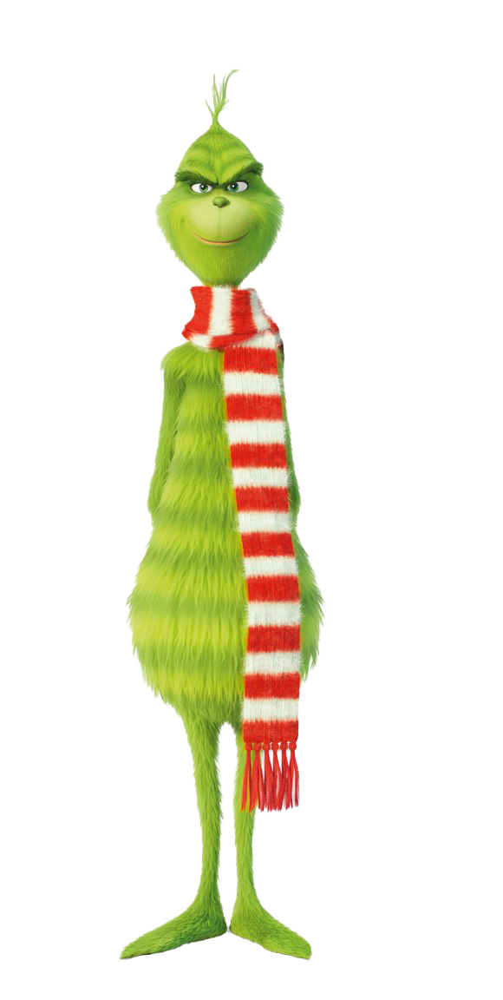

«Гринч — похититель Рождества» (англ. How the Grinch Stole Christmas, дословный перевод «Как Гринч украл Рождество»; США, 2000) — семейная комедия с Джимом Керри в главной роли, выпущенная компанией Universal Pictures. Фильм был снят Роном Ховардом по книге «Как Гринч украл Рождество», написанной в 1957 году Доктором Сьюзом. Картина получила неоднозначные отзывы, однако по кассовым сборам лидировала в течение четырёх недель в Соединенных Штатах и собрала 260 миллионов долларов в США и более 345 миллионов долларов во всем мире, заняв второе место по кассовым сборам среди праздничных фильмов, уступив только фильму «Один дома».
Жители сказочного городка Ктограда очень любят праздновать Рождество. Но есть тот, кто ненавидит этот праздник — покрытый зелёной шерстью неопрятный отшельник Гринч, живущий на высокой горе среди мусора в полном одиночестве, не считая доброго пса по кличке Макс. Гринч не питает любви к жителям Ктограда, а они в ответ окружили его существование небылицами. Только маленькая жительница города Синди Лу, дочь почтового работника Ктограда, интересуется прошлым и судьбой Гринча, убежденная, что он имеет равное с жителями право наслаждаться праздником. Расследование, проведенное Синди среди тех, кто когда-либо знал Гринча, раскрывает причину ненависти последнего к кторам. С раннего детства сверстники во главе с будущим мэром городка насмехались над внешностью Гринча, подкидыша, влюбленного в самую красивую девочку Марту Мэй, и тот сбежал, затаив обиду на кторов и возненавидев Рождество. Несмотря на взаимную неприязнь мэра и Гринча Синди все же убеждает последнего прибыть в город на Рождественский вечер. Но празднование оборачивается для Гринча очередной порцией насмешек, а предложение мэра руки и сердца Марте Мэй с приложением роскошной автомашины становится для отшельника последней каплей. Устроив в городе переполох, в ходе которого праздничная елка сгорела, Гринч вознамерился испортить праздник кторам окончательно, украв все рождественские подарки. В своем лежбище он шьет костюм Санта-Клауса и собирает механические сани, твердо убежденный, что суть Рождества заключается в обычае дарить подарки. В течение ночи Гринч крадет подарки из Ктограда, не забывая попутно злобно пошалить. Однако на утро, когда Гринч уже собирался избавиться от украденного, он слышит праздничный хор кторов, воодушевленных Синди и её отцом. Тронутый до глубины души таким великодушием, Гринч с помощью Синди успешно возвращает все подарки и заслуживает прощение кторов и любовь Марты, в то время как мэр, всю жизнь ненавидевший Гринча, остается с носом. В конце фильма бывший отшельник устраивает праздничный банкет в своем логове, куда приглашает всех жителей.
